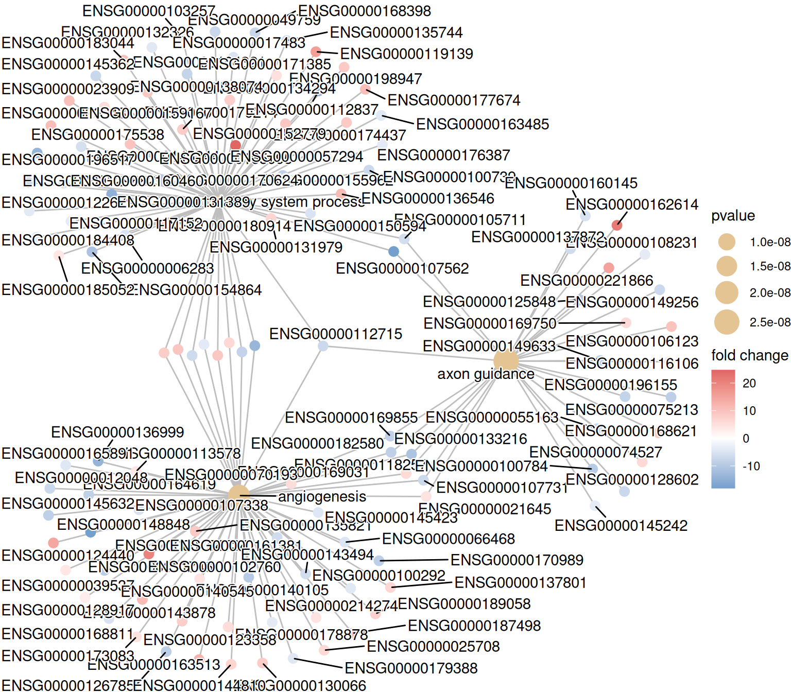
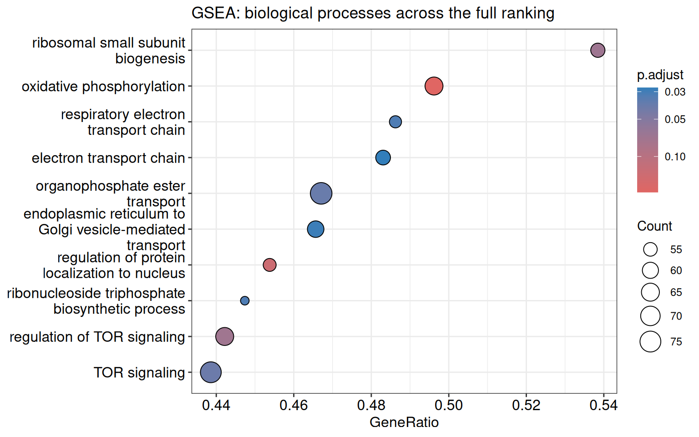
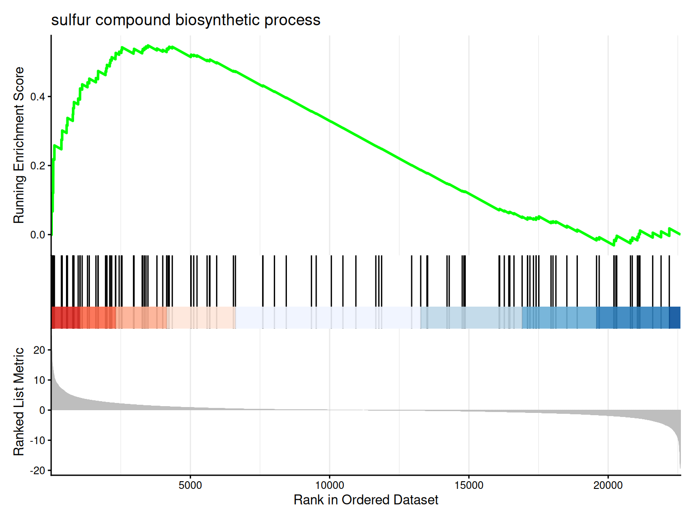

1The first complete workflow: ORA, GSEA, and plots
This chapter starts from the committed datasets/de_table.tsv file derived from the Bioconductor airway example with DESeq2. The table contains Ensembl IDs, differential-expression statistics, and adjusted p-values for dexamethasone-treated versus untreated airway smooth-muscle samples. The table is local at render time; the regeneration script and package provenance are documented in datasets/readme.md.
The example answers two related questions about the same contrast:
ORA: among genes selected by an explicit adjusted-p-value and fold-change rule, which biological-process terms are over-represented?
GSEA: across the complete DESeq2 Wald-statistic ranking, which terms are shifted toward the top or bottom?
The thresholds are teaching choices. In a real analysis, replace them with rules defined before inspecting enrichment results.
baseMean log2FoldChange stat padj
Min. : 0.00 Min. :-5.325905 Min. :-19.41608 Min. :0.0000
1st Qu.: 0.00 1st Qu.:-0.463691 1st Qu.: -0.56367 1st Qu.:0.6952
Median : 0.11 Median :-0.014700 Median : -0.03119 Median :0.9963
Mean : 336.15 Mean :-0.008159 Mean : 0.05032 Mean :0.7853
3rd Qu.: 10.28 3rd Qu.: 0.381747 3rd Qu.: 0.48069 3rd Qu.:0.9963
Max. :325662.66 Max. : 9.505972 Max. : 24.85609 Max. :0.9999
NAs :30208 NAs :30208 NAs :30208
The table uses Ensembl gene IDs and the stat column supplies a signed ranking. Keep both facts visible in an analysis script. An identifier can be syntactically valid and still be incompatible with the selected annotation database.
1.2 2. Define the universe, selected genes, and ranking
The ORA universe starts with genes having a finite DESeq2 statistic and is then restricted to Ensembl IDs present in org.Hs.eg.db. The selected list applies a fixed padj and absolute log2 fold-change rule. GSEA uses the complete finite, mapped statistic ranking, including genes that do not pass the ORA threshold.
cat("Selected genes for ORA:", length(selected), "\n")
Selected genes for ORA: 885
cat("Selected genes in universe:", all(selected %in% universe), "\n")
Selected genes in universe: TRUE
universe, selected, and ranking use the same Ensembl namespace after filtering against the keys available in org.Hs.eg.db. The unmapped count is reported rather than silently treated as biological absence. In a real experiment, construct the candidate universe from genes that were measurable and eligible for selection, then record the annotation coverage.
1.3 3. Run over-representation analysis
enrichGO() tests Gene Ontology terms using the selected vector. ont = "BP" restricts this example to biological process terms; use "MF", "CC", or "ALL" when that choice matches the question. The permissive pvalueCutoff = 1 and qvalueCutoff = 1 settings keep the complete result object for teaching and plotting; apply a pre-specified reporting threshold when interpreting a real study.
The output is an enrichResult. Its @result slot can be converted to a data frame, but retain ora itself: the object carries the gene-to-term information needed by downstream plots.
enrichGO() accepts the Ensembl input but uses the OrgDb mapping internally; the returned object records the internal key type as ENTREZID. Readable symbols can be added for inspection without changing the test:
A dot plot is a compact first view. Dot size is the number of selected genes in a term, and colour represents the adjusted significance used by the plotting method. A network plot is useful for seeing shared genes among a small number of terms.
p_ora_dot <-dotplot(ora, showCategory =10) +ggtitle("ORA: selected genes and biological processes")p_ora_dot
Warning: None of the names in `foldChange` match the genes of this result, so
the item nodes will be drawn grey. `foldChange` has to be named with the same
gene IDs as the enrichment result, e.g. 8837, 5166, 340273.
p_ora_network

cnetplot() is intentionally limited to three terms here. Showing every term usually produces a dense graph that is harder to read than the dot plot.
1.5 5. Run GSEA on the complete ranking
GSEA does not use selected as its input. It uses the complete named ranking, so genes below the ORA threshold still contribute. The minGSSize and maxGSSize settings keep this first local example reasonably quick while excluding extremely small or very broad terms. Setting cutoffs to 1 retains the tested terms so that the plotting example remains informative even when few terms meet a conventional significance threshold.
The result is a gseaResult. Its NES and enrichmentScore describe direction and magnitude relative to the ranked list; the adjusted p-value controls for testing many terms. Inspect both effect direction and statistical evidence rather than sorting only by a single column.
1.6 6. Visualize the GSEA result
The dot plot gives a profile-level overview. gseaplot2() shows the running enrichment score, the locations of genes in the selected set, and the ranked statistic for one term.
p_gsea_dot <-dotplot(gsea, showCategory =10) +ggtitle("GSEA: biological processes across the full ranking")p_gsea_dot

if (nrow(as.data.frame(gsea)) >0) {gseaplot2(gsea, geneSetID =1, title = gsea$Description[1])}

The x-axis of a GSEA curve is the position in the ranked list, not a gene identifier. A term enriched at the top has a positive direction for this signed ranking; a term enriched at the bottom has a negative direction.
1.7 7. Compare the two questions and save results
ORA and GSEA can both be useful, but they are not duplicate tests. ORA asks whether a thresholded set has more members of a term than expected under the universe. GSEA asks whether term members accumulate toward one end of the complete ranking. Report which input and background were used for each result.
# These files are optional outputs; the result objects remain the analysis record.write.csv(de_table, "de-table-used.csv", row.names =FALSE)write.csv(as.data.frame(ora_readable), "ora-go-bp-results.csv", row.names =FALSE)write.csv(as.data.frame(gsea), "gsea-go-bp-results.csv", row.names =FALSE)saveRDS(list(input = de_table,universe = universe,selected = selected,ranking = ranking,ora = ora,gsea = gsea ),"enrichment-objects.rds")
For a short report, start with the two dot plots and one GSEA curve. For a detailed report, include the ID type, universe construction, threshold, ontology, package versions, and the complete result tables.
Offline boundary. This chapter uses data shipped with R/Bioconductor packages. org.Hs.eg.db is a local annotation package, and the example does not query KEGG, Enrichr, g:Profiler, or another remote service. A real study should record the annotation package version because local annotations change over time.